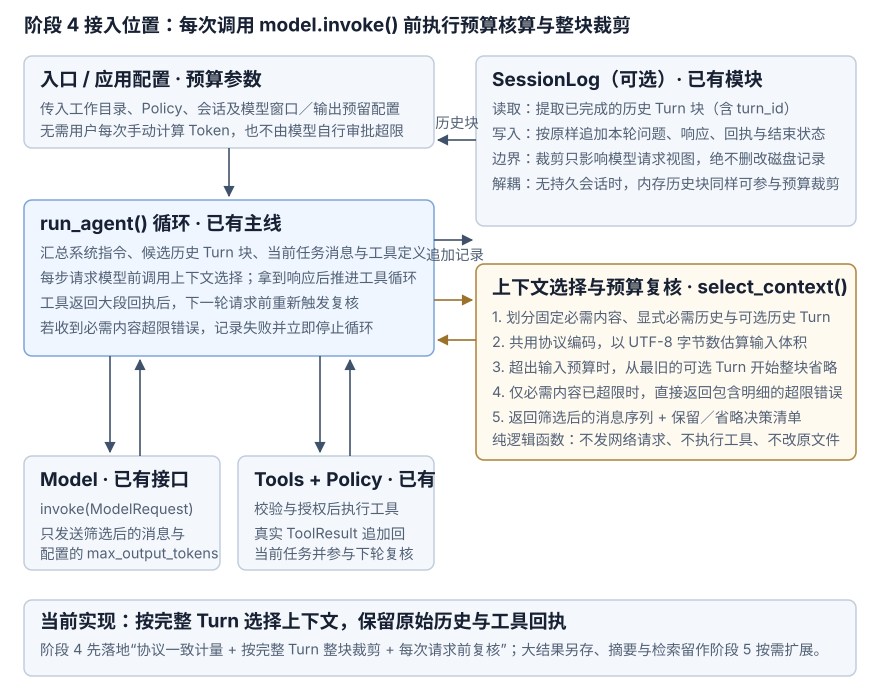

阶段 4：上下文管理与预算
1. 问题起点：历史与工具回执越来越长，每次都要全部发给模型吗？
完成阶段 3 后，程序已经能够跨轮加载历史并在单轮循环内连续调用工具。但随着交互深入，输入体积会在两个地方迅速膨胀：
- 用户（任务
T1）：“帮我写一份活动通知，用中文，时间统一写 UTC。” - 模型：给出初稿。
- （中间任务
T2、T3反复调整标题与语气，产生大量已作废的旧草稿） - 用户（当前任务
T4）：“参考工作区里的往期资料，沿用前面的时间规则，把通知缩成两句。” - （当前任务第 1 步：模型调用
read_file读取文件，工具返回大段文本回执，准备发起第 2 步模型请求）
此时程序在组装下一次模型请求时面临两难：
- 如果只发最后这一句提问：模型既不知道第 1 轮规定的“UTC 时间规则”，也拿不到刚刚读取的资料或待修改的草稿。
- 如果把全部历史和工具回执全部拼进去：早已作废的草稿与大段回执会反复占用模型上下文窗口（Context Window），拉高耗时与费用，甚至直接触发窗口超限报错。
“保存了多少历史”与“本次请求发送多少内容”是两个独立的问题。本阶段的核心任务是：在每次调用模型前，按输入预算从候选内容中筛选本轮必需的上下文，并清晰记录保留与省略了哪些任务块。
期望达到的效果：
- 未超预算原样通过：当候选输入总体积未超出预算时，完整保留全部可用历史与当前消息。
- 超出预算整块裁剪：当输入超出预算时，保留显式标记的必需历史（如
T1）与当前任务消息，从最旧的可选任务（Turn）开始整块省略，绝不居中切断工具调用与回执。 - 必需内容超限直接拦截：若省略全部可选历史后，仅系统指令、必需历史与当前任务内容仍超出预算，在发起模型请求前立即报错停止，绝不静默删减必需内容。
- 循环内每步动态复核：同一任务内工具返回大段回执后，下一步请求模型前重新计量与筛选；裁剪只生成本次请求视图，磁盘或内存中的原始记录保持完整。
2. 一次模型请求包含哪些上下文数据？
把单次调用 model.invoke() 时提交给模型的全部输入统称为本轮上下文（Context）。对照现有的 ModelRequest 契约，它由以下四部分组成：
- 系统指令（
SYSTEM）：应用配置的全局行为规则（TextMessage("system", ...)）。 - 候选历史任务（Candidate History）：此前已完成的用户任务序列。它们既可以来自阶段 3 的
SessionLog，也可以在不开启持久化文件时直接由内存传入——持久化存储不是上下文预算管理的必需前置依赖。 - 当前任务消息（Current Turn Messages）：本轮用户提问，以及本轮循环内已经产生的
ModelResponse和真实ToolResult。 - 工具定义与协议续接数据：即使模型本步不调用工具，可用工具的 Schema（
request.tools）也会随请求发送并占用窗口；历史响应中的原生续接字段（ProviderContinuation）同样会参与协议编码。
在筛选和组装上下文时，每条数据必须保持原始角色与信任边界：用户早期提出的 UTC 要求依然是 user 消息，工具返回的文件内容依然是 ToolResult。绝不能因为某段历史被标记为“必需保留”就将其提权为系统指令，更不能因为历史里某次写入曾获准就跳过当前 Policy 的权限检查。
3. 如何计量输入体积与核算预算？
“只保留最近 5 轮对话”无法真正控制请求体积——一轮纯聊天可能只有十几个 Token，而一轮读取文件的工具调用可能包含上万 Token。要准确判断上下文是否装得下，必须明确计量口径与预算公式：
- 按协议编码后的完整输入计量：模型按 Token 处理输入。计量函数必须覆盖编码后的消息结构、角色标记、工具调用参数、工具 Schema（
ToolSpec）以及协议续接数据，与 OpenAIChatModel 实际发往 SDK 的结构保持一致，不能只把纯文本字符数简单相加。 - 扣除输出预留与安全余量：当输入与输出共用同一个模型上下文窗口时，可用输入预算的计算公式为：
可用输入预算 (input_budget) = 模型窗口上限 (context_window) - 最大输出预留 (max_output_tokens) - 安全余量 (safety_margin)若应用或服务商同时指定了独立的输入上限（
max_input_tokens），则取两者的较小值。计量失败或预算计算结果非正数时直接报错停止，绝不把未知体积当成0。
当前计量口径：estimate_input_tokens() 与 SDK 发送共用 encode_input()，将编码后的消息、工具定义与工具控制字段序列化为 JSON，以 UTF-8 字节数作为偏保守的 Token 估算值。这个值不是供应商的精确 Token 数，也不保证服务端一定不会超限；服务端模板开销与估算误差需要安全余量。默认应用窗口额度为 32768，输出预留 512，安全余量 1024，得到输入预算 31232。窗口额度不是自动识别出的模型规格，应按实际模型限制设置；需要精确计量时可注入适配该模型的 InputMeter。
| 上限参数 | 限制什么 | 检查时机 | 触达上限时的行为 |
|---|---|---|---|
max_steps |
单次用户任务最多发起几次模型请求 | Runner 循环每步开始前 | 抛出 step_limit 错误并停止循环 |
max_output_tokens |
单次模型回答最多生成多少输出 Token | 随 ModelRequest 传给模型服务端 |
服务端截断生成并返回 stop_reason="length" |
input_budget |
单次模型请求允许发送的输入上下文最大体积 | 每次调用 model.invoke() 前 |
优先整块省略可选旧任务；若仅必需内容已超限则直接报错停止 |
4. 裁剪前如何区分“必需内容”与“可移除块”？
回到活动通知的例子：第 1 轮（T1）提出的“中文、UTC 时间”比中间第 2、3 轮（T2、T3）已废弃的标题草稿更重要。“时间最近”只是默认排序顺序，不等于“内容最重要”。在未引入复杂的模型自动提炼前，首版将候选输入清晰划分为三类：
- 本轮固定必需内容（Required Current）：系统指令
SYSTEM、工具定义tools、当前用户提问，以及当前Turn循环内已产生的ModelResponse与ToolResult（当前任务尚未走完，不对其内部已发生的步骤做半截删减）。 - 显式标记的必需历史（Pinned / Required Turns）：由调用方按
turn_id明确指定必须保留的已完成历史任务（例如标记包含有效 UTC 规则的T1）。 - 按完整
Turn归组的可移除历史（Optional Turns）：其余已完成的历史任务。- 为什么以已完成的完整
Turn作为最小裁剪单元？如果一次模型响应发起了两个工具调用（call_1、call_2）并收到两条回执，按消息条数截断会导致call_id配对断裂并引发协议报错。而阶段 3 中每个已完成的Turn都已经过闭合校验（包含完整的“用户提问 → 工具调用与回执链 → 最终回答”），整块保留或整块省略一个Turn，天然不会拆散任何工具调用配对。
- 为什么以已完成的完整
5. 首版裁剪策略：按时间顺序整块省略旧任务
本项目阶段 4 MVP 选择：确定性的整块 Turn 裁剪。具体规则为：未超出输入预算时，原样保留全部候选内容；超出输入预算时，锁定必需内容，从时间最早的可移除任务（Turn）开始整块省略，每次移除后对完整候选请求重新计量，直到满足预算为止。保留下来的任务与消息严格维持原有先后顺序。
用一组可手算的数据验证裁剪过程
假设单测注入可手算的计量函数，输入预算上限为 30，当前候选内容如下：
- 候选构成与体积：固定必需内容（系统指令 + 工具定义 + 当前提问）占
8；显式标记必需的T1（含 UTC 规则）占4；可移除旧任务T2占12、T3占7。 - 第 1 步（初始整体计量）：候选总体积为
8 + 4 + 12 + 7 = 31，超出预算（30）共1个单位。 - 第 2 步（跳过必需块，整块移除最旧可选块）：
T1属于显式必需历史，跳过不删；移除时间最早的可选任务T2（占12）。哪怕只超了1个单位，也绝不为了凑满30而去截断T2内部的一半消息或工具回执。 - 第 3 步（重新整体计量并返回）：对剩余序列
[SYSTEM, T1, T3, 当前提问]重新计量，总体积为19 ≤ 30，满足预算。返回筛选后的消息序列，以及选择说明（budget=30, used=19, kept=["T1", "T3"], dropped=["T2"]）。
接入真实协议计量时，同样在每次移除一个可选 Turn 后对完整候选请求重新调用计量函数，不依赖“分块体积简单相加一定等于整体编码大小”的假设。
6. 循环内每步复核、超限拦截与决策清单
将上下文选择接入 Runner 循环时，必须处理好单轮多步工具调用带来的动态增长。考虑当前任务 T4 内部包含工具调用的场景（预算仍为 30）：
- （Step 1 请求模型前）：候选序列为
[SYSTEM, T1(必需,4), T3(可选,7), T4提问(8)]，计量为19 ≤ 30，正常发出第 1 次模型请求。 - 模型（Step 1 响应）：发起
read_file工具调用。 - （工具执行并落盘）：
read_file返回真实文件内容回执，并追加写入SessionLog。 - （Step 2 请求模型前重新复核）：当前任务固定必需内容增加了 Step 1 的模型响应与工具回执：
- 情况 A（省略可选块后可放下）：若新增响应与回执占
6，总体积变为19 + 6 = 25 ≤ 30，直接通过；若占15，总体积变为34 > 30，此时先整块省略剩余的可选历史T3（省出7），重新计量得27 ≤ 30，正常发出第 2 次模型请求。 - 情况 B（仅必需内容已超限，直接拦截）：若工具回执占
20，即使省略了全部可选历史（T2、T3），仅[SYSTEM, T1, T4提问, Step 1响应与回执]就已达到32 > 30。此时 Context Manager 拒绝截断当前任务或必需历史，在发起 Step 2 模型请求前立即返回超限错误（包含必需体积32、预算上限30与计量口径），Runner 将本轮 Turn 标记为failed并停止循环。
- 情况 A（省略可选块后可放下）：若新增响应与回执占
为什么必须返回“选择决策清单”且不修改原始记录？
- 排查问题有据可依：每次构建一并返回预算上限、保留的
turn_id列表、省略的turn_id列表与最终计量值。当模型回答漏掉某项要求时，开发者可以直接核对决策清单，立刻分清“是因为超出预算被裁剪掉了，还是已经发给模型但模型没遵守”。 - 原始历史完整保留：裁剪始终返回新的消息元组构造本次
ModelRequest，绝不原地删改内存列表或SessionLog中的 JSONL 记录。
什么时候再增加结果另存、历史摘要或按需检索？
- 单条工具回执过大：完整结果另存，回执只保留预览和补读位置。
- 早期要求经常被裁剪：考虑维护任务要求，或对旧任务生成摘要。
- 外部资料太多：先检索相关片段，再放入上下文。
这些能力在阶段 6按真实瓶颈选择，方案见 Context 模块原理；跨会话复用项目知识见 阶段 5：Memory。
7. 初始化、调用与源码

初始化：配置预算、工具与会话
- 入口配置：__main__.py 接收窗口额度、输出预留、安全余量、可选输入上限和
--pin-turn。ContextBudget在创建时校验预算，run_task()将配置传给 Runner，并在任务结束后关闭模型连接。 - 历史任务：
SessionLog.history_turns()返回带turn_id的HistoryTurn元组，仅包含已完成任务。原有history()仍返回平铺消息。没有持久会话时，可通过run_agent(history=...)直接提供内存历史；每个块都校验用户问题、工具配对和最终回答。 - 必需历史：调用方通过
required_turn_ids指定必须保留的已完成任务。未知 ID、失败或未完成任务不能被静默忽略；CLI 的--pin-turn仅用于本次运行，下次运行需要重新指定。
运行期：每次请求前重新选择
- 加载历史：
run_agent()在开始新任务前读取历史块，将当前问题与后续响应、回执单独累积。 - 选择上下文：
select_context()接收系统指令、历史块、必需 ID、当前消息、工具定义、预算与计量器。候选请求超限时从最旧的可选任务开始整块省略，每次都重新计量完整输入。 - 请求模型：选择函数返回
ContextSelection(request, decision)。Runner 输出决策清单，再将request交给model.invoke()；请求的max_output_tokens与预算中的输出预留保持一致。 - 继续工具循环：模型响应与实际工具回执原样追加到当前消息和会话文件。下次请求前使用增长后的当前消息重新筛选，不在原始历史上删改。
- 返回或失败：成功时
RunResult.context_decisions返回每步清单。必需内容超限时抛出ContextOverflowError，其decision包含预算、体积、计量口径与保留／省略 ID；Runner 将任务记为failed并原样抛出错误。计量异常同样停止，不发送未知体积的请求。
决策清单显示在终端，并通过运行结果返回；它不作为新消息写入历史。超限失败的计量明细会随错误原因保存在任务结束记录中。
8. 运行与验证
在项目根目录运行以下本地检查，不请求外部模型：
uv run pytest tests/test_context.py tests/test_session.py tests/test_models.py
uv run python scripts/check_docs.py上下文测试使用可手算计量器、本地临时文件与本机 HTTP 服务，期望达到的效果：
- 整块裁剪：未超预算或恰好等于预算时保留全部内容；超限时按时间顺序省略可选任务，必需历史与原有消息角色不变。
- 超限停止：必需内容过大时模型调用次数为零；工具回执使后续请求超限时停止下一次调用，已经发生的工具动作与完整回执仍可查询。
- 协议完整：多工具调用、失败回执与原生续接字段整块保留或省略；SDK 实际发送的消息、工具定义与计量内容一致，输出上限与预留配置相同。
- 历史完整：运行前的 JSONL 内容仍是运行后文件的完整前缀；关闭再打开会话，已省略的历史依然可查。
用真实模型继续会话
- 保存规则：运行下面第一条命令，记下输出的会话 ID 和任务 ID。
- 添加草稿：使用同一会话继续讨论标题与语气，让历史逐渐增长。
- 保留规则再追问：将第一条任务 ID 填入
--pin-turn；查看终端中的budget、used、unit、kept与dropped，核对实际省略了哪些任务。
uv run python -m learn_agent "帮我写一份活动通知，用中文，时间统一写 UTC。"
uv run python -m learn_agent --session SESSION_ID "给出几个不同的标题和草稿。"
uv run python -m learn_agent --session SESSION_ID --pin-turn TURN_ID --max-input-tokens 6000 "沿用前面的时间规则，把通知缩成两句。"
uv run python -m learn_agent --show-session SESSION_ID将 SESSION_ID 与 TURN_ID 替换为实际 ID。输入上限 6000 只用于观察裁剪，是否省略历史取决于实际长度。可用 --context-window、--max-output-tokens 和 --safety-margin 调整窗口核算；必需内容超限时应增大合理额度或缩小当前任务，程序不会自行放宽预算。
上述任务命令会产生真实 API 用量，每项任务默认最多请求四次；--show-session 只读本地记录。自动化测试验证程序与协议，不证明真实模型一定遵守中文、UTC 或两句要求；这些回答质量需要在实际调用后核对。